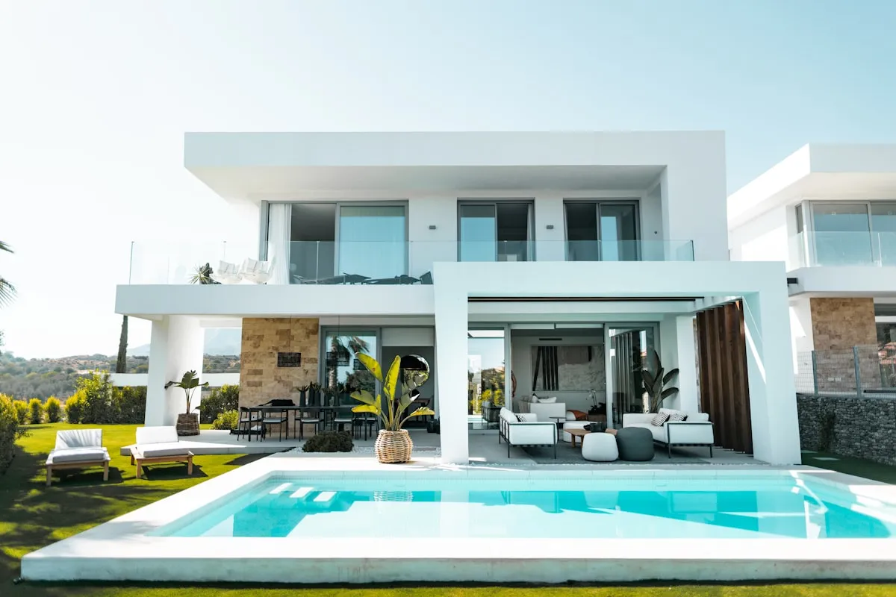

Ringkasan Inti
- RAB lahan miring mencakup pos biaya tambahan untuk pekerjaan tanah (cut and fill) dan struktur retaining wall yang tidak ada pada lahan datar.
- Cut and fill menjadi salah satu komponen biaya paling signifikan pada proyek lahan berkontur, dipengaruhi kemiringan lereng dan akses alat berat.
- Dinding penahan tanah (retaining wall) dan perkuatan pondasi bertingkat wajib dimasukkan sebagai pos anggaran terpisah dari struktur utama.
- Survei kontur dan pendekatan desain split level sejak awal bersama arsitek berpengalaman membantu menghemat anggaran hingga 25–30%.
Daftar Isi Artikel
- 1. Apa Perbedaan RAB Rumah di Lahan Miring dan Lahan Datar?
- 2. Kenapa Cut and Fill Memengaruhi Total Biaya Konstruksi?
- 3. Bagaimana Cara Memperkirakan Tambahan Biaya Struktur untuk Lahan Miring?
- 4. Apa Saja Pos Anggaran yang Sering Terlewat pada RAB Lahan Miring?
- 5. FAQ (Pertanyaan Sering Diajukan)
- 6. Kesimpulan Praktis
Membangun hunian di area perbukitan seperti Dau, Karangploso, Pujon, maupun Buring menawarkan pemandangan alam panorama yang spektakuler. Namun, desain rumah tanah miring Malang membutuhkan Rencana Anggaran Biaya (RAB) dengan komponen tambahan khusus seperti pekerjaan cut and fill, dinding penahan tanah (retaining wall), dan rekayasa drainase bawah tanah yang tidak pernah ditemukan pada perhitungan proyek lahan datar standar.
1. Apa Perbedaan RAB Rumah di Lahan Miring dan Lahan Datar?
RAB rumah di lahan miring memiliki variabel teknis yang jauh lebih rumit dibandingkan lahan berkontur datar. Pada lahan datar, tahapan pekerjaan persiapan umumnya hanya sebatas pembersihan lahan (land clearing) dan galian pondasi dangkal. Sebaliknya, pada lahan miring, kestabilan lereng tanah harus dijamin sebelum struktur bangunan atas dapat didirikan.
| Komponen Pekerjaan | Lahan Datar Standar | Lahan Miring / Berkontur |
|---|---|---|
| Pekerjaan Tanah | Galian tanah pondasi standar (kedalaman 0,8–1,2 m). | Pekerjaan cut and fill masif, leveling terasering, pemadatan per lapis. |
| Struktur Penahan Tanah | Tidak diperlukan retaining wall penahan lereng. | Wajib dinding penahan tanah (pasangan batu kali / beton bertulang kantilever). |
| Sistem Pondasi | Pondasi batu kali lajur atau footplate telapak standar. | Kombinasi bored pile / strauss pile, sloof gantung bertingkat, dan tie beam silang. |
| Sistem Drainase | Saluran air hujan keliling standar dialirkan ke resapan. | Sub-drainase dinding penahan (weep holes, geotextile, ijuk) dan parit sabuk bukit. |
| Akses Alat Berat | Akses jalan material umumnya mudah dijangkau armada truk. | Sering memerlukan pembuatan jalan kerja sementara dan biaya langsir bertingkat. |
Perbedaan mendasar ini membuat pos anggaran pekerjaan sipil bawah (sub-structure) pada lahan miring bisa menyerap 20% hingga 40% dari total nilai kontrak pembangunan, tergantung derajat kemiringan lahan.

2. Kenapa Cut and Fill Memengaruhi Total Biaya Konstruksi?
Cut and fill adalah proses pemotongan bukit tanah tinggi dan penimbunan pada titik rendah guna menyesuaikan elevasi tapak dengan rencana arsitektur. Proses ini menjadi salah satu pos pembengkakan biaya terbesar jika tidak direncanakan secara akurat sejak awal. Beberapa faktor krusial penyebab tingginya biaya pekerjaan tanah di Malang Raya antara lain:
- Volume Kubikasi Tanah yang Dipindahkan: Semakin terjal sudut kemiringan lereng, semakin masif volume kubikasi tanah (m³) yang harus dikeruk dan dipadatkan dengan mesin stamper atau compactor.
- Aksesibilitas Alat Berat: Lokasi tapak di kawasan lereng perbukitan seperti Dau atau Buring sering kali memiliki akses jalan lingkungan yang sempit atau curam, sehingga excavator mini dan dump truck membutuhkan manuver khusus yang menambah durasi sewa alat.
- Biaya Buang Tanah (Disposal): Bila tanah galian mengandung lapisan humus gembur yang tidak layak dijadikan timbunan padat, tanah tersebut harus dibuang ke luar area proyek. Tarif truk pengangkut dan retribusi lokasi pembuangan resmi wajib dihitung cermat.
- Waktu dan Risiko Cuaca: Curah hujan yang tinggi di wilayah Malang dapat memicu genangan lumpur atau risiko kelongsoran saat galian terbuka, menuntut perkuatan lereng sementara (terpal/turap dolken) yang memerlukan biaya tambahan.
Catatan Arsitek Malang
Jangan memaksakan memotong lereng menjadi satu bidang datar rata tanah. Menerapkan konsep desain arsitektur split level atau lantai berundak yang mengikuti kontur alami tapak dapat menghemat volume cut & fill hingga 35%, menghemat ratusan juta rupiah untuk dinding penahan, serta menciptakan dinamika ruang interior yang sangat unik.
3. Bagaimana Cara Memperkirakan Tambahan Biaya Struktur untuk Lahan Miring?
Menentukan angka estimasi biaya struktur penahan tidak boleh ditebak secara kasar. Kesalahan perhitungan dapat membahayakan keselamatan penghuni dari ancaman tanah longsor. Tahapan teknis berikut wajib dilakukan sebelum menyusun RAB final:
- Survei Pemetaan Topografi (Total Station / Theodolite): Mengukur kontur titik elevasi per meter persegi tapak untuk memperoleh peta garis kontur akurat sebagai acuan gambar potongan kerja.
- Uji Sondir & Soil Test: Mengetahui kedalaman lapisan tanah keras (pembacaan konus > 150 kg/cm²) agar panjang tiang bored pile atau strauss pile dihitung tepat tanpa pemborosan besi dan beton.
- Pemilihan Tipe Retaining Wall yang Efisien: Memilih dinding penahan gravitasi batu kali untuk lereng rendah (< 2,5 meter) atau beton bertulang kantilever bertulang untuk tebing tinggi guna mengoptimalkan biaya material.
- Perhitungan Pembesian dan Drainase Dinding: Memasukkan biaya geotextile perkuatan, batu pecah koral penyaring, pipa suling (weep holes PVC) per meter persegi dinding penahan agar tekanan hidrostatik air tanah tidak merobohkan struktur.
- Alokasi Biaya Kontinjensi 10–15%: Menyiapkan dana cadangan tak terduga yang lebih tinggi dibanding proyek lahan datar (yang umumnya hanya 5%) untuk mengantisipasi anomali struktur tanah saat penggalian berlangsung.
4. Apa Saja Pos Anggaran yang Sering Terlewat pada RAB Lahan Miring?
Banyak pemilik rumah pemula terkejut saat biaya pembangunan melonjak di tengah jalan. Hal ini sering disebabkan oleh terabaikannya pos-pos teknis pendukung berikut:
- Biaya Jalan Akses dan Landasan Alat Berat: Menyiapkan plat baja atau pemadatan sirtu sementara agar alat berat tidak tergelincir saat bermanuver di lereng curam.
- Biaya Langsir Material Bertingkat: Upah buruh pikul tambahan untuk membawa semen, pasir, dan batu bata dari tepi jalan raya menuju titik bangunan di bawah atau atas tebing.
- Saluran Drainase Sabuk (Cut-off Drain): Pembuatan selokan di puncak lereng untuk membelokkan aliran limpasan air hujan dari perbukitan atas agar tidak mengikis pondasi rumah Anda.
- Perkuatan Tangga & Ramp Akses Sirkulasi: Struktur tangga luar penghubung terasering luar rumah yang membutuhkan pondasi dan railing pengaman kokoh.
5. FAQ (Pertanyaan Sering Diajukan)
Berapa persen tambahan biaya membangun di lahan miring dibanding lahan datar?
Secara umum, biaya konstruksi di lahan miring berkisar antara 15% hingga 35% lebih tinggi dibanding lahan datar, terutama pada pekerjaan sub-struktur penahan tanah dan pengondisian tapak.
Apakah semua lahan miring di Malang membutuhkan retaining wall beton bertulang?
Tidak selalu. Untuk perbedaan elevasi di bawah 2 meter dengan sudut lereng landai, retaining wall pasangan batu kali gravitasi atau bronjong kawat sudah cukup memadai dan lebih hemat anggaran.
Apakah arsitek dapat membantu menekan biaya cut and fill?
Ya. Arsitek profesional akan mengadaptasikan konsep split level yang menyeimbangkan volume galian dan timbunan (zero cut-and-fill balance) sehingga tidak ada tanah yang perlu dibuang keluar lokasi.
6. Kesimpulan Praktis
Menghitung RAB bangun rumah di lahan miring Malang membutuhkan kecermatan ekstra pada pekerjaan cut and fill, perhitungan retaining wall, serta sistem drainase anti-longsor. Melibatkan kontraktor dan arsitek rumah berpengalaman di Malang sejak awal perencanaan akan mengamankan investasi Anda dari pembengkakan biaya, sekaligus menghasilkan hunian lereng bertingkat yang kokoh, estetis, dan bernilai jual tinggi.
Punya Lahan Berkontur di Malang? Konsultasikan RAB Anda
Diskusikan topografi lahan, strategi split level hemat cut and fill, serta hitungan RAB transparan bersama arsitek kami.

Muhammad Musyaffa
Penulis & Tim Riset Arsitektur Maroon Arsitek Malang, spesialis perencanaan rumah lahan berkontur, rekayasa struktur retaining wall, dan perhitungan RAB konstruksi.